01 January 2009
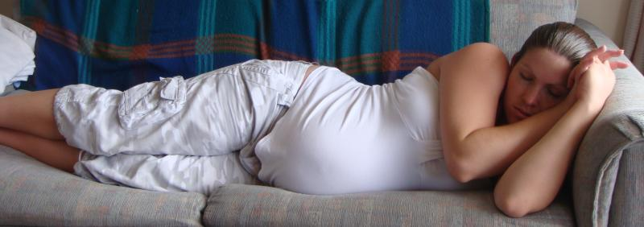
I spent a few days in Brisbane with my heavily-pregnant sister on my way back to the UK after spending summer in New Zealand. Unfortunately, she didn't pop until I left (literally hours after). So I’m now an Uncle to little Jai! So chuffed for Em!
On my way back from Brisbane, I stopped over in Dubai. The amount it's changed over the years is incredible. I've got to admit, I was pretty impressed with Madinat Jumeirah. Last time I saw it, it was sand. Now, it's this amazing array of shops, restaurants, hotels and nightclubs.
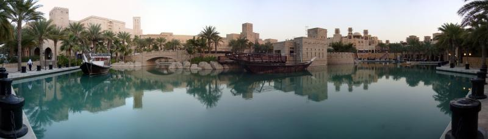
Also got to catch up with a few of my favourite people in the world, the Tuqan clan. Yousef is CEO of Flip Media. I'd really missed our shisha & backgammon evenings. I know nothing stays the same, but it's hard not to look back sometimes.
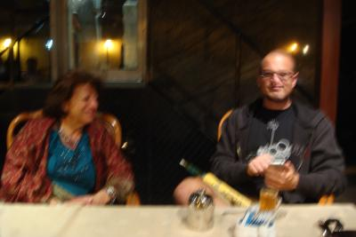
Being back in the UK was a bit of a shock to the system. I’m loving this ‘chasing the sun’ business. Mainly because the UK has been a bit short-changed as far as the sun goes. But it did start me thinking about what I want long term. I've enjoyed being back in New Zealand the last couple of years - and got a very tempting job offer this last trip.
Problem is, I've got a foot in both countries. Family are back in NZ, but having spent most of the last decade in Cheltenham, I've got friends and a life here that I'd miss if I moved back. Decisions decisions...
I'd pretty much decided to move back though. The New Zealand trip was so good that I felt a constant pull to return. So I resigned from work and started making preparations...
One of my mates, Kev, fancied a lads trip away, so organised a trip for four of us to the ‘dam. I’d been before and sometimes am a bit funny about visiting places I’ve previously visited, but these lads were sound, so was well worth a visit.
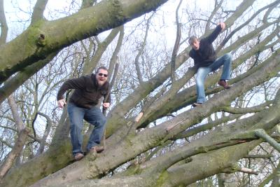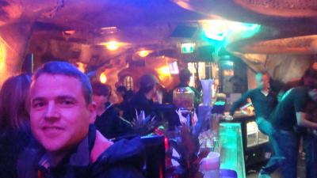
It was probably the tamest lads trip to the dam ever, but I had fun. Lots of wandering around like loons, parks, great food, poker, drinks. I’m not into smoking, but still enjoy the place. Still haven’t been to the Anne Frank house though!
My block of flats had had some bees in the roof the past couple of years. But this spring they ended up swarming. Three queens and their bees all swarmed in one of the trees on the grounds.
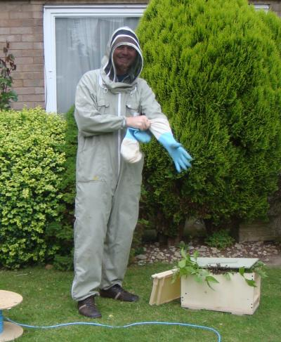
I phoned up a local beekeeper to see if he'd like the bees. They came out and had a look and we decided to get the bees out of the tree and see if we couldn't get them into boxes. The beekeeper went home for extra boxes for the other swarms and the son and I suited up and figured out how to get the bees out of the tree.
In the end, I MacGyvered up a lasso-type arrangement at the end of some bamboo (kindly supplied by one of the many neighbours who were spectating. Using that, I could break the branch that the swarms were on, and get the bees down onto the canvas.
Then it was just a matter of shaking (gently) the bees to try and get the queen of each swarm into the box. Once the queen was in the box, the rest of the bees figured it out and pretty much jumped in there with her.
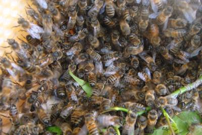
Turns out these bees are really docile, well behaved bees, so the beekeeper was pretty happy with the three swarms we managed to collect. I got stung once, but wasn't a biggie.
Still unemployed and enjoying it, a nice surprise was a last minute festival ticket for the Isle of Wight. A friend of mine (Ru) had someone from her group of friends not able to make it. I wasn't working, so was able to easily head down with them for a long weekend of music and camping.
Finally got to see the Kooks and Kate Nash (disappointed by her tbh). And loved Newton Faulkner and Amy MacDonald, neither of whom I'd heard much of.
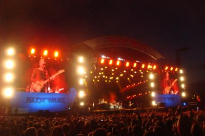
Was really lucky weather-wise too. Was kind of threatening at some points, but mostly was sunny and lovely. Cold at night though! Camping... I'm still not so sure. :-)
Got knocked off my bike unfortunately. Second decent bike accident in ten years. Not brilliant.
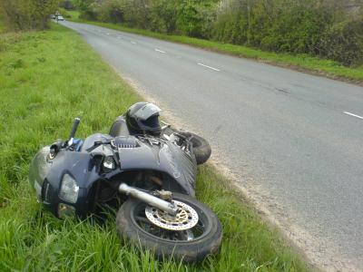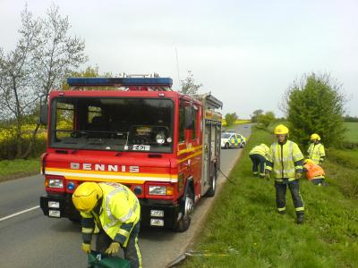
I was overtaking a slow-ish queue of cars and a Ranger Rover pulled to overtake out without indicating or looking, knocking me off to go sliding down the road at 60mph and my poor VFR got totalled. I luckily got away with a bruised back, sore hip and thumb. I couldn’t walk for a few days afterwards, but I was so well treated by my insurance company.
They gave me a replacement bike to use so I could sit my IAM exam and managed to get decent reparations from the other driver for my damaged leathers, helmet and bike. Still, I’d have rather not have had the accident in the first place, but at least I don’t feel ripped off in the aftermath.
An added bonus was, that was one less thing to get rid of before moving back to New Zealand. :-)
I'd started having some doubts about whether New Zealand is going to work for me or not. Probably just normal fears of the unknown, but it really started to play on my mind.
I'd also talked to a lot of friends about my situation. And one of the big considerations was my residency in the UK and what could possibly happen if I left, went back to New Zealand, decided it wasn't actually for me, then wanted to return.
It looks as though there was a good chance that when I returned, I'd get re-admitted as a tourist, which would invalidate my Indefinite Leave to Remain. Of course, that would depend on whether I stayed away for two years or not. But I know how easily two years can slip by. Or what if I just wanted to go travelling for a few years? That would also mean I'd lose the right to settle here.
So it made a lot of sense to apply for Citizenship. My only real problem was the amount of time I'd spent out of the country in the past four years. I was right on the border of not having spent enough time in the UK. (Easily enough for tax residence though - got their priorities straight I guess)
So I was without passport for a while and unable to travel until the application was processed. What to do in the meantime? I put out a couple of feelers to a few contacts and suddenly was inundated with work. When it rains, it pours. That said, I wasn't complaining.
Managed to pick up a couple of very interesting projects to work on. The biggest one was a re-write of UCAS's social media platform (Yougofurther) for students going to University. It went really well and was a nice showcase of an Agile project in an organisation that was exclusively waterfall previously.
Since I was lacking a passport, it was time to have a stay-at-home holiday rather than head abroad. So Henning (The crazy German) and I headed out to see Gary (A pint? I really shouldn't... oh, go on then!) Phillips in Pembrokeshire.
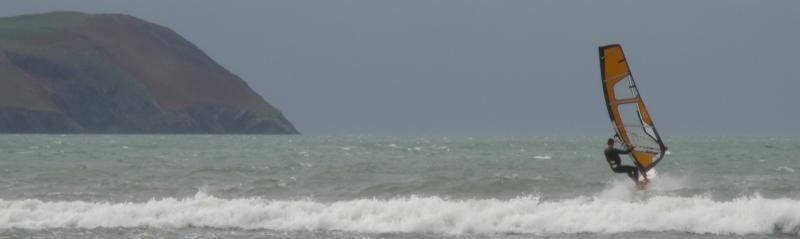
Was just a weekend of windsurfing (only the crazy German), walking and well... Beer. All in a good cause though!
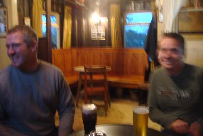
After Autumn comes Summer. Or at least, that's what I've done the last couple of years, so it was time to do it once more. This time I was joined by the Crazy German, who fancied a bit of sunshine for Christmas / New Years.
But I'll save that for the next travelogue...